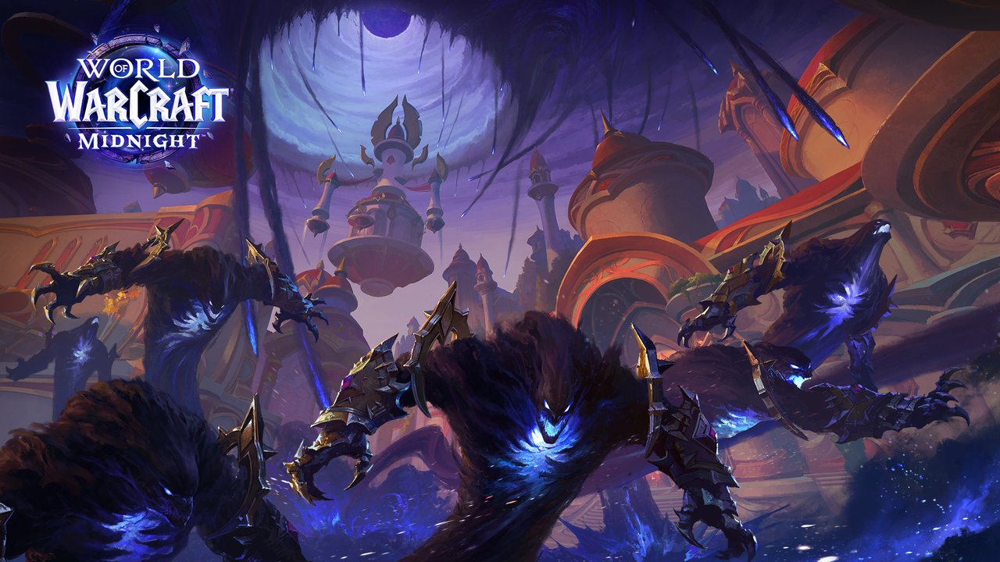
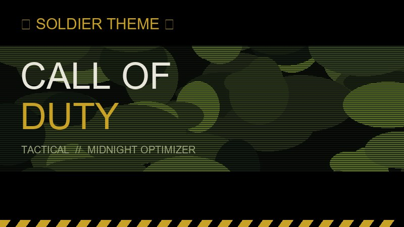

Boa gaming!
O teu PC, no seu melhor.
Otimiza. Joga. Domina.
“Good players play.
Great players optimize.”
⚡ Desempenho em Tempo Real
◉ Perfil Ativo
Desempenho máximo para jogos competitivos.
⚙ Sistema
Otimização Rápida
Aplica as melhores definições para o teu sistema.
Limpeza do Sistema
Remove ficheiros inúteis e liberta espaço.
Otimizar Jogos
Aplica tweaks por jogo (CS2, WoW, etc.).
Servidores
Melhora a tua ligação e reduz o ping.
Estúdio de Voz
Melhora a qualidade do teu microfone.
📈 FPS em Tempo Real
Telemetria de FPS em breve.
🎮 Jogos Suportados
◉ Últimas Otimizações
Ainda sem ações registadas.
TAMBÉM É
UMA SKILL.Midnight Optimizer
MODO DE GUERRA
Modo Competitivo
Aplica de uma vez: energia máxima, Modo Jogo, sem DVR, rede otimizada, limpeza temp e foco total. Ideal antes de Ranked, Faceit, Valorant, LoL, CS2, Fortnite, Warzone.
- Ainda não ativado nesta sessão.
DESATIVADO
🎯 Otimização Dentro do Jogo
Mexe nos ficheiros do próprio jogo (autoexec, video, Config.wtf). Com backup automático.
⭐ Configs dos Pros — 1 clique
Escolhe o pro: sensibilidade, mira, viewmodel, rates e resolução aplicados de uma vez (com backup). Fecha o CS2 antes de aplicar.

🔫 Counter-Strike 2 — Competitivo
A detetar…
- autoexec.cfg: rates 128-tick, interp 0/1, sem ragdoll/sangue, fps_max 0
- cs2_video.txt: tudo Low, sem MSAA
- Guia: Steam → CS2 → Propriedades → colar Launch Options

🌌 World of Warcraft Midnight — Raid / M+
A detetar…
- Config.wtf: sombras OFF, SSAO OFF, partículas 10, render D3D12
- maxFPS 200 / background 60, LOD baixo
- Fecha o jogo antes de aplicar. Backup em Config.wtf.midnight_backup

★ Call of Duty (Warzone / MW) — Dicas de performance
O COD não tem ficheiro de config simples como o CS2 — estas são as definições que mais FPS dão no jogo:
- Display Mode: Fullscreen Exclusive • Refresh Rate: máximo do monitor
- Render Resolution: 100 • DLSS/FSR: Performance (se o PC for fraco)
- Texture Resolution: Low • Shadow Map: OFF • Cache Spot/Sun Shadows: OFF
- Anti-Aliasing: SMAA T2X • Filmic Strength: 0 • Motion Blur: OFF
- No Windows: ativa o Modo Competitivo aqui da app antes de abrir o Battle.net/Steam
Pronto. Deteta os jogos primeiro.
⚡ Plano de Energia
Alterna entre Ultimate Performance e Equilibrado.
◉ Modo Jogo do Windows
Prioriza o jogo no CPU/GPU. Recomendado: ON.
✖ Game Bar & DVR
Desativa captura em 2º plano que rouba FPS.
☾ Efeitos Visuais Leves
Desliga animações para menos latência.
⬢ Prioridade GPU / HAGS
Agendamento GPU acelerado. Pode pedir reinício.
⚔ Encerrar 2º Plano
Mata browsers, launchers parados e apps pesadas.
🧹 Limpar Temporários
Limpa TEMP + flush DNS. Rápido e seguro.
◈ Otimizar Rede
Anti-throttling + SystemResponsiveness 0.
🛡️ Privacidade
🛡️ Privacidade Total
Telemetria, ads, histórico e Copilot OFF.
🧹 Debloat
🧹 Remover Bloatware
Bing, Solitaire, Clipchamp e afins. Xbox intacto.
🎮 Gaming Extra
🎯 Gaming Extra
Sem aceleração do rato, fullscreen exclusivo, sem throttling.
🖥️ Sistema
🖥️ Sistema Rápido
Arranque sem atraso, sem lock screen, pesquisa limpa.
🛡️ Privacidade Profunda
🕵️ Anti-Tracking Total
Sugestões, tracking, Bing, Cortana, Recall e IA OFF.
⚙️ Serviços e Tarefas
⚙️ Serviços Gaming
Desliga telemetria e serviços inúteis em 2º plano.
🕘 Tarefas Agendadas
Corta telemetria do Task Scheduler.
🔄 Atualizações e Energia
🔄 Updates Manuais
Sem reboot a meio do jogo, sem P2P.
🔋 Energia Extra
Sem hibernação/fast startup, USB sempre ligado.
🔊 Som e Notificações
🔊 Som Focado
Boot silencioso, chamadas não baixam o jogo.
🔕 Windows Calado
Desliga toasts do Windows enquanto jogas.
🎨 Personalização e Performance
🎨 Barra e Iniciar Limpos
Sem widgets/Copilot, menu clássico, long paths.
🚀 Performance Extra
Menus instantâneos, CPU no jogo, latência mínima.
Pronto. Escolhe uma otimização…
🌐 Servidores Públicos
1 clique para entrar. Prime Atualizar para ver quem está online agora.
🕘 Histórico — os teus últimos servidores
Ainda não entraste em nenhum.
🟢 Pessoas online (0)
A ligar…
À procura de jogadores…
💬 Chat
Escolhe o separador Geral ou uma conversa.
Chat público via broker gratuito — não partilhes palavras-passe.
Escolhe uma voz em cima.
O nosso Setup instala o micro virtual sozinho. No CS2/Discord escolhe "Midnight Mic" como microfone.
Avatares: OpenMoji (CC BY-SA 4.0) • Sons: myinstants
Pronto.
🔊 Soundboard — memes do myinstants
Para sair no CS2/Discord: saída em baixo = Midnight Speakers e no jogo microfone = Midnight Mic.
Pronto.
Biblioteca de Batalha
Adiciona os teus .exe e lança com prioridade ALTA + boost automático.
☾ Ficha da Máquina
…
…
…
…
…
…
…
…
…
Dica: corre a app como Administrador (botão direito → Executar como administrador) para as otimizações de registo e energia funcionarem a 100%.
🚀 Arranque com o Windows
A verificar…
Quando ativo, o Midnight Optimizer abre sozinho ao ligar o PC (pasta de Arranque via Registo do Windows).
🐞 Chat de Bugs
Escreve aqui os bugs que encontrares. Ficam guardados neste PC.
Sem bugs registados. Sê o primeiro a reportar!
Enter = enviar • Shift+Enter = nova linha